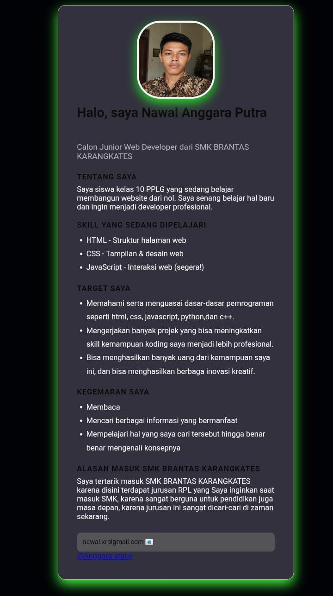
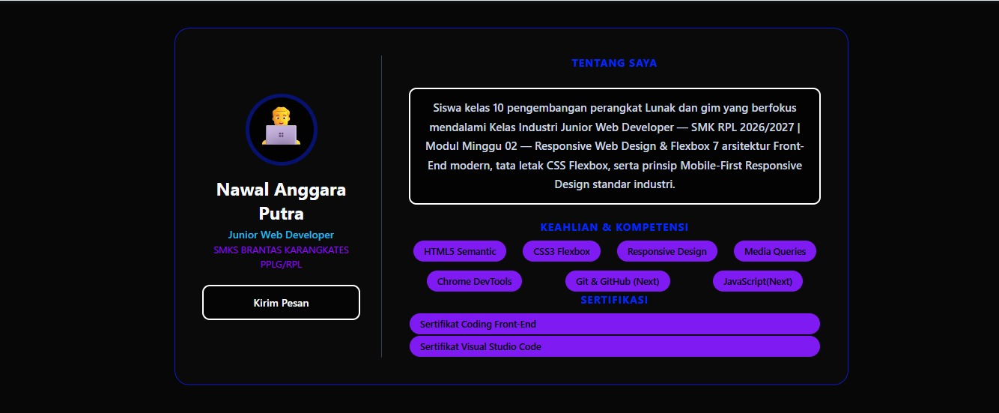
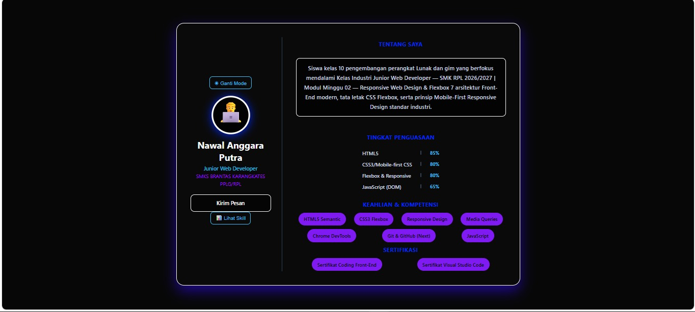
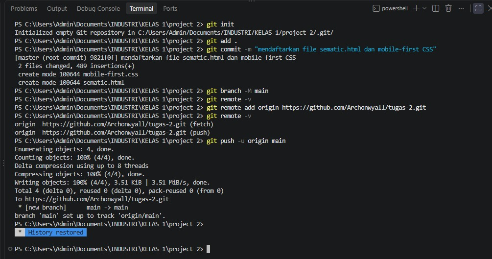
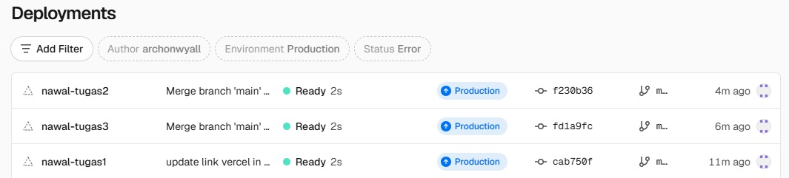

Modul 1&2


Halaman web pertama saya, berisi perkenalan, foto, hobi, cita-cita, keahlian, dan kontak. Dibuat dengan HTML dasar di Minggu 01 dan 02.
Kumpulan hasil belajar saya di Kelas Industri UBIG.


Halaman web pertama saya, berisi perkenalan, foto, hobi, cita-cita, keahlian, dan kontak. Dibuat dengan HTML dasar di Minggu 01 dan 02.

Menambahkan interaksi tombol menggunakan JavaScript pada halaman web minggu 02 pada minggu 03.

Mengaplikasikan Git dan GitHub pada semua proyek pada minggu 04.

Mendeploy proyek pada vercel dan juga Menambahkan file README.md pada semua proyek sebelumnya pada minggu 05.
Semua proyek di halaman ini dibuat dengan HTML. Tampilannya akan saya rapikan dengan CSS mulai Minggu 03.
Belum, saya masih belajar. Namun kamu tetap boleh menghubungi saya melalui halaman Kontak.
Proyek ini saya buat dari template modul dengan sedikit mengubah dan menambahkan beberapa elemen.